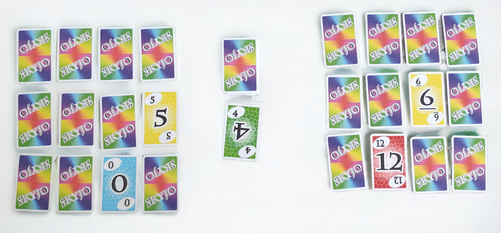

Skijo — Implémentation de Skyjo
Implémentation Python du jeu de cartes Skyjo avec interface Tkinter, système de scores et logique multijoueur.
Technologies
Fonctionnalités
- Interface graphique Tkinter intuitive
- Gestion multijoueur pour 2-8 joueurs
- Système de score par manche avec historique
- Architecture modulaire (core/gui/bots)
- Logique de jeu complète avec phases de révélation
- Base pour l'implémentation de bots IA
Règles du Jeu
Skyjo est un jeu de cartes où le but est d'obtenir le score le plus bas possible. Chaque joueur commence avec 12 cartes disposées en grille 4x3, face cachée. Le jeu se déroule en plusieurs manches, et chaque manche se termine quand un joueur révèle toutes ses cartes ou décide de terminer.
Les cartes ont des valeurs de -2 à 12, et le défi est de remplacer strategiquement les cartes de valeur élevée par des cartes de valeur plus faible, tout en gérant les informations partielles sur ses propres cartes et celles des adversaires.
Défis Techniques
- Gestion des états du jeu : Coordination complexe entre l'état des cartes de chaque joueur et la logique de tour
- Phase de révélation initiale : Implémentation de la séquence d'ouverture des cartes selon les règles
- Interface utilisateur : Création d'une grille de cartes interactive avec Tkinter
- Architecture modulaire : Séparation claire entre logique de jeu, interface et future IA
- Système de scoring : Calcul automatique des scores avec gestion des manches multiples
Architecture du Projet
Core Game Logic
Moteur de jeu principal avec règles, validation des mouvements et gestion des états
Tkinter GUI
Interface graphique avec grille interactive, affichage des scores et contrôles de jeu
Player Management
Gestion des joueurs humains et préparation pour l'intégration de bots IA
Score System
Calcul automatique des scores par manche et suivi des statistiques globales